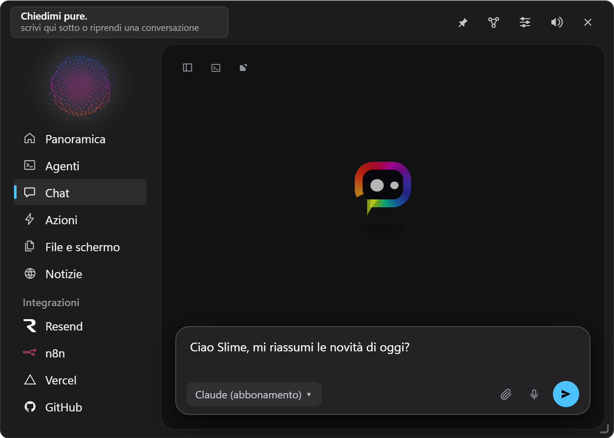
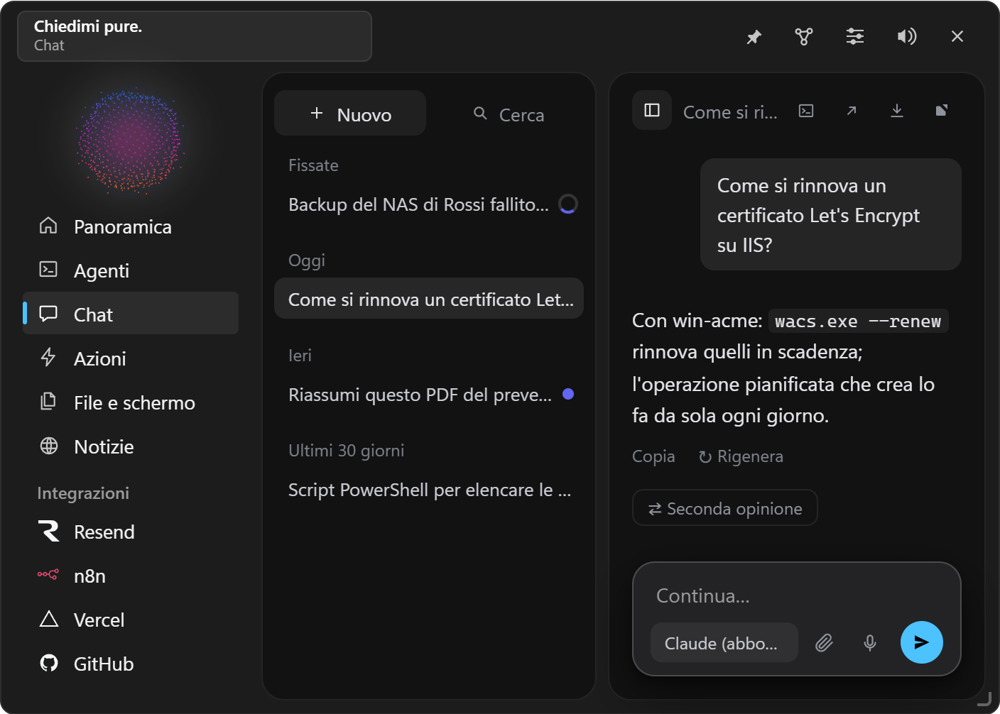

La chat
Scrivere, allegare, comandi con / e @, assistenti, dettatura, cronologia, seconda opinione.

#Scrivere
- Una chat vuota mostra un disegno tenue e lento finché non scrivi: di serie Ezzy che galleggia; in Impostazioni → Aspetto → Chat → Chat vuota puoi scegliere un'isola che gira, un mare di puntini, un cielo stellato, un'aurora, una rete di punti o niente. Si ferma quando la chat non si vede e resta fermo se Windows riduce le animazioni. Sotto il disegno trovi le tue ultime tre conversazioni: un clic e riprendi da lì.
- Il campo va su più righe: Invio invia, Shift+Invio va a capo. Quello che stai scrivendo resta anche se riavvii. ↑ nel campo vuoto riprende l'ultima domanda.
- Le risposte sono in markdown: titoli, elenchi, tabelle, codice con Copia. Mentre il motore lavora vedi il ragionamento e gli strumenti usati: quello in corso si scrive da solo in fondo, con il cursore. A risposta finita i passi si raccolgono in N passi: un clic li apre.
- Con la Modalità terminale, Progetto… sotto il campo sceglie la cartella di questa chat, così legge le regole e il git del progetto; sul pulsante vedi anche il branch. Con Claude Code, sotto il campo un anello dice quanto è pieno il contesto della conversazione: dall'80 % diventa arancione ed è il momento di aprirne una nuova. Cartella predefinita usa quella delle Impostazioni. Cambiarla apre una conversazione nuova.
- ■ Ferma interrompe la risposta in corso (e il permesso in attesa).
- Mentre risponde puoi continuare a scrivere: Invio mette il messaggio in coda, sotto la conversazione con «in attesa», e parte da solo appena la risposta finisce, uno dopo l'altro. Su ogni messaggio in coda: Invia subito (ferma la risposta e lo manda adesso), Modifica (lo rimette nel campo) e ✕. Ctrl+Invio lo manda subito senza passare dalla coda. Con il campo vuoto il pulsante resta ■ Ferma.
- Se sali a leggere, il testo che arriva non ti riporta giù: ↓ torna in fondo.
- Calcolatrice: scrivi
840 + 22%o15% di 840e il risultato compare subito, calcolato in locale. Invio lo copia, Ctrl+Invio chiede comunque alla chat.
#Sotto ogni messaggio
- Copia.
- Modifica (sulle tue domande): il testo torna nel campo e la conversazione riparte da lì.
- ↻ Rigenera (sull'ultima risposta).
- ⑂ Dirama da qui: una conversazione nuova che parte da quel punto; quella di prima resta intera nella cronologia.
- Con Claude Code, Modifica, Rigenera e Dirama riprendono la sua sessione proprio da quel punto, come Claude Desktop: Claude ricorda anche i file letti fin lì.
- ⟲ File (sulle tue domande, con la modalità terminale): riporta i file che Claude Code ha cambiato da quella domanda in poi com'erano prima, e toglie quelli che ha creato. Il primo clic dice quali file, il secondo conferma. Come in Claude Desktop, quello che fanno i comandi non conta. I punti di ripristino restano anche dopo un riavvio, con la conversazione, per 30 giorni.
- I passi si aprono: sotto ogni passo di Claude Code, ▸ Esito mostra cosa ha dato (l'uscita di un comando, il testo letto, un errore in rosso); i passi dei sotto-agenti compaiono sotto il loro nome («↳ Legge i PDF · …»).
- Scrivere mentre lavora: con Claude Code un messaggio scritto mentre risponde gli arriva subito, fra un passo e l'altro, e ne tiene conto nella stessa risposta (sotto la domanda compare «↪ …»), come in Claude Desktop. Con gli altri motori va in coda come prima.
- Multi motore: in Impostazioni → Chat scegli i motori che lavorano insieme, poi accendi il pulsante nella conversazione. Il motore della chat guida e ti risponde, gli altri fanno pezzi del lavoro e vedi una riga per ognuno. Prima che tu la veda, la risposta viene controllata da un altro motore e corretta se serve: ne arriva una sola, già rivista, e sotto trovi ✓ Controllato. Intanto vedi i passi, non la bozza. Ne bastano due, meglio di due marche diverse. Costa di più e può metterci il doppio: accendilo per i lavori veri. Le azioni chiedono Consenti/Nega come sempre.
- ⇄ Seconda opinione: un altro motore rilegge l'ultima domanda e la risposta e segnala errori, mancanze o rischi (oppure «va bene»). Il suo parere arriva anche al motore principale, che può correggersi.
#Allegare
| Come | Cosa |
|---|---|
| Ctrl+Alt+K | Il testo o l'immagine copiati |
📎 accanto al microfono, o @file e @cartella | Uno o più file, o cartelle intere, scelti dal PC |
| Ctrl+V nel campo | Immagini, e tutti i file e le cartelle copiati in Esplora file |
| Trascinare file o cartelle sull'isola | Allegati alla domanda, senza ricominciare la conversazione |
@appunti | Il testo o l'immagine copiati |
@finestra | La foto di una finestra aperta |
@vassoio | Un file del Vassoio |
| Trascinare il personaggio della chat su una finestra | Quella finestra come contesto (immagine, nome dell'app, titolo). Esc annulla |
| Riquadra e chiedi | Una zona dello schermo (vedi File e schermo) |
| Chiedi alla chat negli Appunti, nel Vassoio, in Notion | L'elemento scelto |
Gli allegati compaiono dentro il campo, sopra il testo: 📄 un file, 📁 una cartella, 📋 un testo copiato; ✕ toglie quello che non serve. Ne puoi mettere più di uno (fino a 20) e partono tutti con la domanda. Di una cartella il motore riceve il percorso e l'elenco dei file che contiene; Claude Code e opencode possono anche aprirli.
Le immagini vanno ai modelli che le leggono, i file di testo nel messaggio, i PDF a Claude.
#File e cartelle nelle risposte
I file e le cartelle che la chat nomina nelle risposte diventano link: percorsi completi (C:\…, \\server\…), tra apici inversi, anche relativi alla cartella della chat, o come link; un :riga alla fine va bene. Diventano link solo quelli che esistono; uno che non c'è più resta grigio e barrato.
- Clic: un file che l'Anteprima sa mostrare (testo, codice, Markdown, PDF, immagini, HTML…) si apre nell'Anteprima accanto alla chat; gli altri, e con Ctrl+clic, nel loro programma. Una cartella 📁 si apre in Esplora file.
- Clic destro: Apri (nel suo programma), Anteprima, Scarica (una copia nella cartella Download, che si apre con il file selezionato), Apri percorso (Esplora file con il file selezionato), Copia percorso.
#Comandi con /
Scrivi / e scegli dal menu (frecce, Tab o Invio). Con Claude Code il menu ha anche i suoi comandi, come in Claude Desktop (segnati ✳): /context, /review, /model, /init, i tuoi comandi di .claude/commands, le skill e i plugin.
| Comando | Cosa fa |
|---|---|
/nuova | Nuova conversazione |
/cronologia, /cerca | Conversazioni passate, anche per parole |
/ricorda … | Salva una nota in memoria senza passare dal modello |
/memoria | Apre la memoria |
/esporta | La conversazione in Markdown nel Vassoio |
/compatta | Il motore continua da un riassunto della conversazione: meno contesto e meno token (con Claude Code è il suo /compact) |
/motore | Cambia motore per questa conversazione |
/oggi, /domani | La giornata: attività, appuntamenti, ticket |
/compito … | Affida un obiettivo a un compito |
/<azione> | Esegue un'azione rapida per nome (es. /backup-giornaliero) |
/<abilità> | Usa un'abilità |
/<assistente> | Conversazione nuova con un assistente |
Un /qualcosa che non è un comando va al motore come testo.
Modelli con campi: un'azione rapida di tipo «Chiedi alla chat» con {{cliente}} nel testo, scelta da /, va nel campo invece di partire; Tab salta da un campo all'altro.
#Assistenti
In Impostazioni → Chat → Istruzioni e memoria crei assistenti con nome, emoji, motore e istruzioni (per esempio «Revisore SQL» o «Traduttore tecnico»). Nella chat li chiami con /nome: parte una conversazione nuova sul loro motore, con il chip 🤖.
#Istruzioni
Impostazioni → Chat → Istruzioni: un testo detto alla chat all'inizio di ogni conversazione («Rispondi breve. Sono un tecnico, i miei clienti sono piccoli uffici…»). Fa parte del profilo, così ogni profilo può avere le sue.
#Dettatura
🎤 nel campo: clic per iniziare e per finire. Con un servizio di trascrizione scelto in Impostazioni → Telegram → Vocali, registra e trascrive con quello; senza, apre la dettatura di Windows (Win+H), locale e gratuita.
#Parlare con l'isola
Da qualunque programma premi Win+Alt+V e parla: l'isola mostra che ti ascolta e, quando fai una pausa, trascrive e manda la domanda alla chat. Puoi finire anche con Fine o premendo di nuovo la scorciatoia; Annulla (o Esc) butta via tutto. La risposta si legge in chat e, con Rispondi a voce acceso, si sente anche dagli altoparlanti; Esc o la scorciatoia la fermano.
Il microfono si accende solo quando premi la scorciatoia, mai da solo. Serve il servizio dei Vocali (Impostazioni → Telegram → Vocali); la voce che risponde c'è con OpenAI e Google AI. Scorciatoia e risposta a voce si cambiano in Impostazioni → Azioni rapide.
#Cronologia
Le conversazioni con un Progetto stanno raggruppate per progetto nella barra laterale: un clic sul nome chiude o apre il gruppo, + inizia lì una chat nuova. Le altre restano divise per data.
A sinistra della chat c'è la barra delle conversazioni: Nuovo, Cerca (apre e chiude il campo di ricerca) e le conversazioni di prima (fino a 100, solo su questo PC) divise per giorno. Il pulsante in alto a sinistra della chat (o Ctrl+B) la apre e la chiude; aperta, l'isola si allarga per farle posto. Trascinandone il bordo destro la fai più larga o più stretta (resta così); un doppio clic sul bordo la riporta com'era.
Puoi tenere più conversazioni aperte insieme: passando a un'altra, quella di prima non si chiude e se stava rispondendo continua. Nella barra un anello che gira indica chi sta rispondendo, un pallino una risposta arrivata mentre eri altrove, ! una conversazione che chiede un permesso (e sopra il campo compare una riga per andarci). Nuova chat lascia aperta quella in corso. Oltre 8 conversazioni aperte, la meno usata e ferma si chiude da sola: resta nella cronologia.
Al passaggio del mouse, ✎ (o un doppio clic sul titolo) rinomina una conversazione: Invio salva, Esc annulla, un titolo vuoto torna alla prima domanda. 📌 la tiene tra le Fissate, ✕ la elimina. Un clic ne riapre una sul suo motore e la continui. Con Claude Code riprende la sua sessione, come Claude Desktop: tutto il contesto di prima, file letti compresi, e l'anello del contesto compare subito. Se la sessione non c'è più (Claude Code le tiene 30 giorni) o la conversazione è di prima dell'8 novembre 2026, la conversazione viene passata come testo. Con i motori via API riprende esattamente da dove era; con opencode come testo. Impostazioni → Chat → Cronologia la svuota o la spegne (spegnendo anche il diario della memoria).
Una domanda entra nella cronologia appena la mandi: se la risposta si interrompe (EasyIsland chiuso, un errore, Ferma) resta con il testo scritto fin lì e il motivo. Le password che scrivi in chat arrivano al motore come le hai scritte, ma nella cronologia e nella memoria diventano «••••••».

#In una finestra
Trascina la voce Chat del menu fuori dall'isola e lasciala dove vuoi, oppure premi il pulsante con la freccia in alto nella chat, oppure clic destro su Chat → Apri in una finestra: la chat diventa una finestra normale di Windows, aperta ingrandita a tutto schermo, con barra delle applicazioni e Alt+Tab, da allargare e spostare dove vuoi. È la stessa chat: conversazioni, motori, permessi e Ferma restano quelli dell'isola, e la voce Chat del menu porta avanti la finestra. Chiudendo la finestra, o con lo stesso pulsante (ora «Rimetti la chat nell'isola»), la chat torna nell'isola; la finestra si ricorda misura e posizione. L'Anteprima resta accanto alla chat anche nella finestra, con lo stesso divisore per allargarla (la finestra si allarga se serve), e torna nell'isola con la chat.
#Modello e fast mode
Con Claude Code, nel menu del motore: Modello di Claude (Fable, Opus, Sonnet, Haiku o quello delle Impostazioni) per questa conversazione, e Claude continua la stessa sessione con il modello scelto; Fast mode per risposte più rapide, che costa di più e richiede l'uso extra attivo sull'account Claude (se manca, la chat lo dice); Sotto-agenti, solo in Modalità terminale, lascia che Claude affidi pezzi del lavoro ad altri agenti in parallelo: è spento di serie perché ognuno riparte da capo e consuma molti token in più.
#Terminale
>_ in alto nella chat apre un PowerShell tuo nella cartella del progetto, nel pannello a destra come l'Anteprima (se l'Anteprima è aperta, sotto di lei): è un terminale vero, come Terminale di Windows: colori, Tab, frecce e cronologia, Ctrl+C per fermare un comando (copia se hai selezionato del testo), Ctrl+V per incollare, editor e password. È tuo, non di Claude: quello che scrivi parte senza card. Riavvia ne apre uno nuovo.
#Sessioni di Claude Code fuori da EasyIsland
In fondo alla cronologia, Claude Code fuori da EasyIsland elenca le sessioni degli ultimi 30 giorni aperte dal terminale, da Claude Desktop o da un editor. Un clic la porta nella cronologia e la riprende qui, con tutto il contesto. Con la modalità terminale lavora nella sua cartella; senza, la conversazione arriva come testo.
#Continuare in Claude Desktop
Con Claude Code come motore, ↗ in alto nella chat apre la conversazione nell'app Claude Desktop, con tutto quello che vi siete detti, e lì la continui. Quando torni a scrivere nella chat dell'isola, prima della tua domanda compaiono i messaggi scritti in Desktop, sotto la riga «Conversazione proseguita in Claude Desktop», e Claude riprende la stessa sessione. Meglio non scrivere nelle due insieme. Serve Claude Code 2.1.285 o successivo e l'accesso con l'abbonamento Claude (non con una chiave API). Nella Modalità terminale la sessione si apre nella cartella del progetto.
#Chiedere da altri posti
- Dal campo in alto dell'isola con Ctrl+Invio.
- Da Telegram, con una conversazione sua (vedi Telegram);
/riprendicontinua lì l'ultima conversazione dell'isola. - Da un'azione rapida «Chiedi alla chat» o dal menu Win+Alt+A sul testo selezionato.